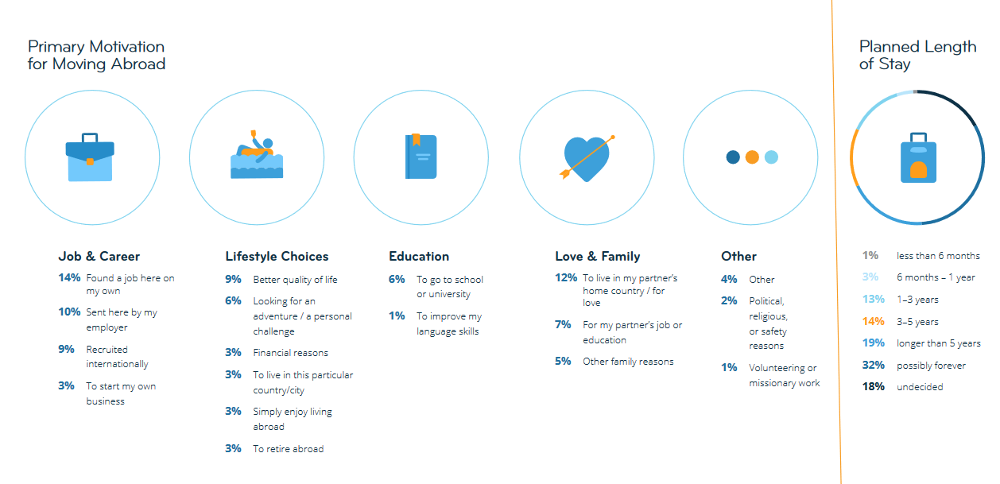
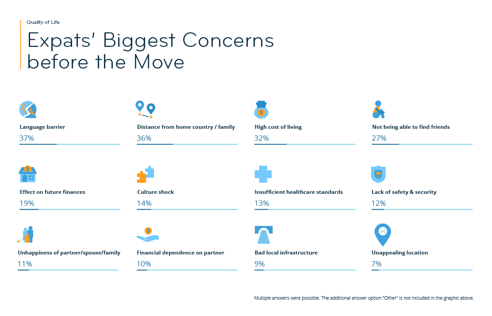
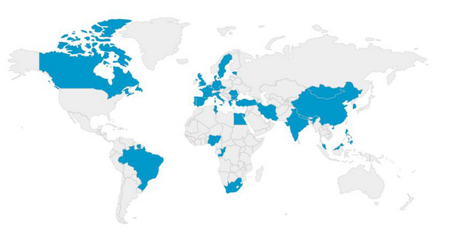

‘Expatriate’ is een Engels leenwoord. Het bestaat uit de Latijnse woorden ‘ex’ (buiten) en ‘patria’ (vaderland). Een expat is iemand buiten het vaderland verblijft. Net als bijna alles op de wereld kennen expats voordelen maar ook nadelen.
Je verlaat een wereld waarin je al een netwerk, vrienden, en sociaal contacten hebt voor een compleet nieuwe wereld waarin alles anders kan zijn. Expats moeten zich aanpassen aan nieuwe gewoontes, culturele nuances en verwachtingen.
In 2019 heeft InterNations een enquête uitgestuurd die ingevuld is door 20.259 expats die wonen in 187 verschillende landen.
Er zijn verschillende redenen waarom mensen migreren naar een andere land. Voor veel mensen zijn werk en carrière de primaire motivatie om te migreren. Levensstijl, educatie en relaties zijn andere redenen waarom mensen migreren.

Motivatie van de expats om naar het buitenland te gaan
Emigreren naar een ander land heeft zijn voordelen, maar ook zijn nadelen.
37% van de expats die de enquête hebben ingevuld geven aan dat ze denken dat de taalbarrière een probleem is na hun emigratieproces. Op de 2e plaats, met 36%, geeft aan dat ze moeite gaan krijgen met de grotere afstand tussen vrienden en familie.

De grootste zorgen van de expats voordat ze naar het land van bestemming vertrekken
Andere factoren waar de expats bang voor zijn, zijn de hogere kosten, moeite hebben met het maken van nieuwe vrienden, effect op toekomstige inkomsten, cultuurshock, onvoldoende gezondheidszorg en tekort aan veiligheid.
Administratie
Allereerst moet het administratief in orde zijn. Denk hierbij aan dingen als burgerservicenummer, ID
kaart, belastingen, verzekeringen, enzovoort. Dit zijn dingen die snel over het hoofd gezien worden
als de persoon hier niet aan denkt. Ook kan het zo zijn dat er in hun land van herkomst andere regels
gelden waardoor dit nieuw terrein is voor de expats.
Weer
In elk land is het weer anders. De temperaturen kunnen flink verschillen ten opzichte van het land van
herkomst. De expat kan ineens te maken hebben met hoge temperaturen of juist met een lage temperatuur.
Ook de hoeveelheid neerslag kan wennen zijn, maar dit is een probleem waar men vrij weinig aan kan
doen.
Vrienden en familie
Hoewel het tegenwoordig makkelijker is om met elkaar te communiceren via Whatsapp, Facetime, Skype,
Facebook is het toch anders dan elkaar in het echt te zien. Het is makkelijker om buiten te worden
gesloten als je in een andere land woont.
Heimwee
Het is gebruikelijk dat de expats na een paar weken last hebben van heimwee. Eenvoudige dagelijkse
taken, zoals het nemen van openbaar vervoer, winkelen of het bijwonen van vergaderingen kunnen een
uitdaging worden in hun nieuwe omgeving. Als er taalbarrières zijn kan dit worden verergerd. Dit zijn
uitdagingen die de lokale bevolking niet helemaal begrijpen waardoor er conflicten kunnen ontstaan.
Toekomstige financiën
De hoge levenskosten is een van de problemen waar de expats geconfronteerd mee worden. Het is echter
lastig om in te schatten hoe duur de kosten zijn tot na de emigratie proces. Ook komen er kosten bij
zoals belastingen en pensioen.
Door de groeiende werkzaamheden binnen ICT Group worden er steeds meer internationals aangenomen. De arbeidsmarkt in Nederland is schaars, waardoor er meer internationals gerecruit worden.
Tijdens het recruitmentproces wordt er gekeken naar verschillende factoren. Er wordt gekeken naar de vaardigheden van de internationals omdat de personen. Als er er projecten open staan in de automotive industrie, dan worden er mensen gezocht die daar kennis en ervaring mee hebben.
Grotendeels van de internationals zijn mensen uit India. Drie op de vier Indiërs die naar het buitenland gaan werken zijn werkzaam in de IT. Naast India zijn ook Turkije en Egypte populaire landen waar werknemers worden recruit.

Land van herkomst van de medewerkers van ICT Group
Centraal Bureau voor de Statistiek. (2019, 25 juli). Aantal Indiase kennismigranten verdubbeld. Geraadpleegd op 20 september 2019, van https://www.cbs.nl/nl-nl/nieuws/2019/30/aantal-indiase-kennismigranten-verdubbeld
InterNations. (2019). Expat Insider 2019: Expats’ Biggest Concerns. Geraadpleegd op 7 september 2019, van https://www.internations.org/expat-insider/2019/expat-concerns-39856
International Citizens. (z.d.). 5 Common Problems Faced by Expatriates. Geraadpleegd op 15 september 2019, van https://www.internationalcitizens.com/expatriates/problems-faced-expatriates.php
Allen, P. (z.d.). The Biggest Challenges of Moving Abroad. Geraadpleegd op 10 september 2019, van https://www.expatfocus.com/the-biggest-challenges-of-moving-abroad
Pettit, S. (2019, 31 oktober). How to overcome the most common expat problems. Geraadpleegd op 31 oktober 2019, van https://www.expatica.com/moving/relocation/the-most-common-expat-complaints-422667/